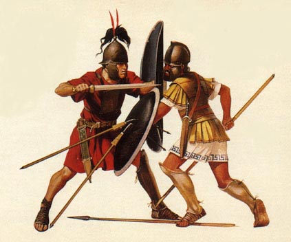

Guerras de la Antiguedad
Esta sección de mi web está dedicada a los wargames de miniaturas ambientados en la antiguedad clásica. Mi período de mayor interés es período helenístico (323 a 31 a. C.), que incluye los conflictos entre los Diádocos (sucesores) por el imperio de Alejandro Magno, la formación de los Reinos Helenísticos en el este, la migración de los celtas al mundo grecolatino, el auge de Cartago y la República Romana, las Guerras Púnicas, la conquista romana de Grecia, y las guerras civiles que destruyeron la República. Es un tiempo con muchos conflictos y naciones coloridas y variadas, con lo que es perfecto para wargaming.
Mi reglamento favorito para jugar este período es Warhammer Ancient Battles. Este sistema está basado en la 5a edición de Warhammer Fantasy Battles, pero con modificaciones para hacerlo más apropiado para un contexto histórico. Me gusta sobretodo por sus excelentes suplementos, dos de los cuáles tocan directamente los conflictos de la era helenística: "Alexander the Great", y "Hannibal & the Punic Wars".
Listas de Ejército para WAB 1.5
Combinando "Alexander the Great" y "Hannibal & the Punic Wars", Warhammer Ancients ofrece listas oficiales para las siguientes naciones del período clásico: Persia Aqueménida, Macedonia Alejandrina, Tracios, Ilírios, Escitas, Romanos, Cartagineses, Hispanos, Númidas, Galos y Ligurios.
Es un buen número de listas, pero tiene dos huecos muy grandes: los pueblos de Italia y Magna Graecia que lucharon contra Roma en su período temprano, y los reinos helenísticos de los sucesores de Alejandro Magno. Warhammer Historical tenía listos dos suplementos ("The Successors" y "Rise of Rome") para llenar este hueco, pero por razones de política interna en Games Workshop, desgraciadamente no se llegaron a publicar.
En esta sección iré publicando listas de ejército para rellenar este hueco, escritas por mí o rescatadas de la comunidad. Dado que todo el material oficial está en inglés, las listas también estarán en esa lengua.
- Epirote Army List (Armies of Antiquity) – I've written this list, based on the "Alexander & The Successors" list from AoA. It should be played against the AoA Republican Romans and Carthaginians. In the future I'll do an alternative list compatible with HatPW.